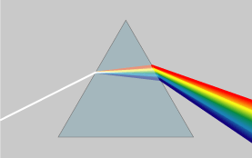
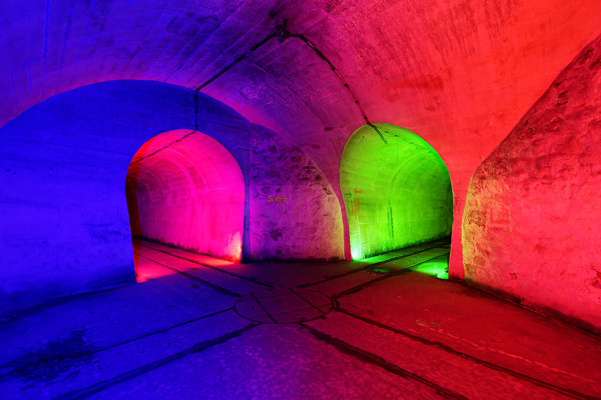
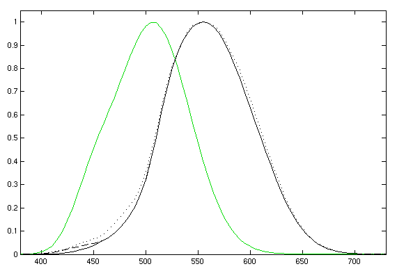

Kružni prikaz boja
Raspon valnih duljina
- crvena - 480 – 405 THz
- narančasta - 510 – 480 THz
- žuta - 530 – 510 THz
- zelena - 600 – 530 THz
- cijan - 620 – 600 THz
- plava - 680 – 620 THz
- ljubičasta - 790 – 680 THz

Disperzija boja
Sadržaj
- Boja
- Objašnjenje
- Simbolicko znacenje boja
- Psihološko djelovanje boja
- Prostorno djelovanje boja
- Svojstva boja
- Boje i prozirnost tijela
- Zanimljivosti
Izvor
WikipediaBoja
Boja (tur. boya) je vidni osjet ovisan o frekvenciji svjetlosnog zračenja. Ljudsko oko zapaža samo vidljivo zračenje, to jest elektromagnetske valove valne duljine od približno 380 do 760 nanometara. Zračenja svake pojedine valne duljine, podražujući na različit način prijamne mehanizme oka (receptore, čunjiće u mrežnici oka) daju dojam određene boje. Osjet ljubičaste boje izazvan je zračenjem s duljinom vala od 390 do 450 nm, modre (plave) boje zračenjem od približno 450 do 500 nm, zelene od 500 do 570 nm, žute od 570 do 600 nm, narančaste od 600 do 620 nm i crvene od 620 do 760 nm. Prijelazi su između boja postupni i normalno ljudsko oko može u cijelome vidljivom spektru razlikovati oko 160 različitih nijansa boja.
Osjet boje obično ne nastaje samo od zračenja jedne frekvencije (to jest od monokromatične svjetlosti), nego redovito od smjesa zračenja užih ili širih područja spektra. Prirodna bijela svjetlost (Sunčeva) polikromatična je, to jest sastavljena je od kontinuiranog niza boja (zračenja između 380 i 760 nm), koje se (s pomoću optičke prizme) mogu rastaviti na boje komponente (Sunčev spektar).
Boja nekog tijela može potjecati od svjetlosti koju ono samo emitira (zbog povišene temperature, elektronske pobude), ili pak od svjetlosti koju odbija (reflektira) odnosno propušta. U ovome drugom slučaju tijelo uvijek upija (apsorbira) dio primljene svjetlosti, pa boja tijela koje ne zrači vlastitu svjetlost ovisi o apsorpcijskim svojstvima njegove površine. Bijela je ona površina koja u jednakoj mjeri odbija (reflektira) sva valna područja bijele (na primjer Sunčeve) svjetlosti. Crna površina potpuno upija takvu svjetlost, a siva djelomično, ali u jednakoj mjeri odbija sva područja bijele svjetlosti. Bijelo, crno i sivo nisu prave (kromatske) boje, već takozvane akromatske boje, jer nemaju svoje svojstveno valno područje, već ovise o stupnju osvijetljenosti, odnosno sposobnosti površine da jače ili slabije upija sva valna područja bijele svjetlosti. Tijelo će biti obojeno nekom pravom (kromatskom) bojom ako pokazuje selektivnu apsorpciju, to jest ako mu površina apsorbira bijelu svjetlost samo na određenome valnom području; tada će boja koju ta površina ima (to jest reflektira) biti komplementarna apsorbiranoj boji. Tijelo će na primjer imati crvenu boju ako, obasjano bijelim svjetlom, najjače apsorbira modro-zeleni dio spektra, a najjače reflektira zračenje koje odgovara crvenomu dijelu spektra.
Objašnjenje
Boja je osjetilni doživljaj koji nastaje kada svjetlost karakterističnog spektra pobudi receptore u mrežnici oka. Boju također pripisujemo površinama objekata, materijalima, svjetlosnim izvorima, itd. ovisno o njihovim svojstvima apsorpcije, refleksije ili emisije svjetlosnog spektra.
U vidnom spektru, odnosno skupu boja, koje ljudsko oko može raspoznati, dolaze redom crvena, narančasta, žuta, zelena, plava, ljubičasta. Zbog toga je i naziv za područje u spektru elektromagnetskih valova učestalosti (frekvencije) ispod one svjetlosnog vala koji odgovara crvenoj boji infracrveno zračenje, a iznad učestalosti vala za ljubičastu boju ultraljubičasto zračenje. Ljudsko ga oko ne zapaža (tada vidimo drugu boju koja je u pozadini), ali ga zapažaju vidni organi nekih životinja, na primjer pčela. Spektar boja se može vidjeti ako snop bijele svjetlosti usmjerimo na optičku prizmu, čime dolazi do njena rasapa (disperzije). Infracrveni val se može opaziti na drugi način: nađe li mu se na putu u rasutom spektru toplomjer, temperatura biva povišena - ljudski ga organizam doživljava kao toplinu.
Tradicionalna podjela boja u umjetnosti je na osnovne i složene. Tri osnovne boje su: crvena, žuta i plava. Osnovne su jer se ne mogu dobiti miješanjem drugih boja. One se zovu i primarne boje. Tri složene boje dobivaju se miješanjem osnovnih boja: crvena + žuta = narančasta, plava + žuta = zelena i plava + crvena = ljubičasta. Te boje se nazivaju i sekundarne. Tercijarne boje dobivaju se miješanjem primarnih i sekundarnih (na primjer plavozelena, žutozelena i druge).
Druga podjela boja je na tople (crvena, žuta, narančasta) i hladne (plava, ljubičasta, zelena). Tako su podijeljene zato što se u prirodi mogu zamijetiti uz određena toplinska stanja (crveno – vatra, plavo – more). U neutralne boje spadaju smeđa, kavena i slično.
Komplementarne boje su dvije boje od koje jedne nema ni malo u drugoj boji. One se nalaze na suprotnim stranama Ostwaldovog kruga boja. To su: narančasta i plava (zato što narančasta nastaje miješanjem crvene i žute, tj. u sebi nema nimalo plave boje), ljubičasta i žuta, crvena i zelena.
Dugine boje obuhvaćaju spektar šest boja (primarne i sekundarne) koje možemo vidjeti propuštanjem zrake svjetlosti kroz trostranu kristalnu prizmu.
Znanost koja se bavi proučavanjem boja zove se optika.
U drugim djelatnostima sustavi boja se se određuju na temelju praktičnih i tehnoloških razloga. Kod aditivnog miješanja boja koje se koristi u televiziji i računarstvu najveći raspon prikaza boja dobiva se kada su primarne boje crvena, zelena i plava. Kod suptraktivnog miješanja boja koje se koristi u fotografiji i tiskarstvu primarne su boje cijan, magenta i žuta, pri čemu se u tiskarstvu radi postizanja većeg kontrasta dodaje još i pigment crne boje.
Simbolicko znacenje boja
Boje oduvijek imaju i veliku simboličku vrijednost. Na primjer zlatna boja (osobito u kršćanskom slikarstvu) predstavlja isijavanje duha i svetost, dok je ljubičasta (purpurna ili porfirna) vladarska boja jer su rimski carevi koji su naslijedili titulu dobivali dodatak "Porfirogent" (rođen u porfiru) zbog rijetkog ljubičastog kamena – porfira kojeg su carevi dovozili iz dalekog Egipta.
Simbolička vrijednost boje mijenja se ovisno u kakvom se okružju koristi. Crveno je, primjerice, boja ljubavi, no u političkom životu ona označava komunizam. Zelena je boja nade, ali ujedno i Islama, i pokreta za zaštitu prirode – zelenih. U europskom kulturnom krugu crno je boja žalosti i pokore, međutim na dalekom istoku, npr. u Indiji, to je bijela boja. Ostale boje su isto tako simbolične: žuta je boja židovstva, ali i Vatikana; crna je boja fašizma i terora uopće; ružičasta označuje optimizam, ljubičasta ljubomoru, itd.
U novom vijeku boje su najvažnija sastavnica državnih zastava. Bojom su označeni i sportski klubovi (Dinamo – plavi, Hajduk – bijeli). Boja je često odrednica nekog grada (u Zagrebu plavi uspinjača, tramvaji..., a u Londonu crveni autobusi i trgovi...). Boje su i sastavni dijelovi zaštitnih znakova pojedinih proizvoda (crvena podloga za bijela slova – Coca-Cola, ljubičasta Milka, itd.).
- Crvena - ljubav, strast, radost, tamno crvena - vrag, revolucionarna boja svih zastava.
- Plava - aristokracija, istina, vjernost, plemenitost.
- Zelena - mir (maslinova grana, lovorov vijenac), nada, besmrtnost (evergreen).
- Žuta - um, pamet, svjetlo, razum.
- Ljubičasta - čarobnjaštvo, pokora, strpljenje, umjetnost.
- Narančasta - plodnost, sjaj, bogatstvo.
- Ružičasta - slatkoća, sramežljivost, nježnost, djevojaštvo.
- Grimizna - čast, kraljevstvo, kardinalska boja, dostojanstvo, bogatstvo, uzvišenost.
- Bijela - čistoća, mir.
- Crna - tuga, bolest, smrt, nesreća, teror.
Psihološko djelovanje boja
Svaka boja ima određeno psihološko djelovanje, to jest izazivaju kod nas razne osjećaje. Evo primjera nekih boja i njihovih djelovanja:
- Crvena - snažno, razdražujuće djelovanje, popravlja raspoloženje, ubrzava puls, disanje i mišićnu napetost.
- Žuta - djeluje poticajno, izaziva radost i veselje,i predstavlja nadu. Velike je vidljivosti i upotrebljava se u prometu.
- Narančasta - djeluje svečano, veselo, izaziva osjećaj zdravlja, životne radosti.
- Zelena - odmara, djeluje blago, stvara unutrašnji mir, odmara vid.
- Plava - djeluje smirujuće, suprotno od crvene, pasivno, hladno, potiče koncentraciju i umiruje.
- Ljubičasta - djeluje mistično, tajanstveno, očaravajuće i prigušuje strasti.
- Bijela - umara.
Prostorno djelovanje boja
U ljudskom oku tople boje se čine bližima, a hladne daljima, iako se nalaze na istoj udaljenosti od oka. Prostorne vrijednosti su ponajbolje iskoristili slikari u umjetnosti (takozvana koloristička perspektiva), posebice fovisti.
Svojstva boja
Osnovne su svojstva (karakteristike) svake boje njezin ton (ovisi o frekvenciji emitiranog odnosno reflektiranog zračenja), svjetljivost (ovisi o jakosti ili intenzitetu zračenja) i zasićenost (ovisi o čistoći boje, to jest o dodatku crne ili bijele primjese).
Miješanjem pojedinih boja spektra dobivaju se različiti tonovi, to jest nove, druge boje. Miješanjem dviju boja kojima položaj u spektru nije udaljen nastaje boja koja leži između njih (na primjer narančasta boja miješanjem crvene i žute). Kao rezultat miješanja nekih boja udaljenih u spektru (komplementarnih, na primjer ljubičaste i žute) nastaje bijela boja. Ako se čiste, kromatske boje, miješaju s bijelom, dobivaju se jasne, svijetle boje; ako se miješaju s crnom, nastaju tamne, zagasite boje.
Izrađeni su različiti sustavi za klasifikaciju pojedinih nijansa boja (Ostwaldova skala, Munsellova specifikacija boja), koji se primjenjuju u prirodnim znanostima, za dekoracije i drugo. Prema teoriji Th. Younga i H. Helmholtza, ljudsko oko ima tri odvojena receptora osjetljiva za tri osnovne boje (crveno, zeleno i plavo), a osjet boje nastaje superpozicijom tih triju osnovnih osjeta; prema tome, normalno je oko polikromatično. Dikromatično oko osjetljivo je za dvije boje, a monokromatično za jednu boju (sljepoća za boje je daltonizam).
Pojedine boje imaju različito psihofiziološko djelovanje, pa se dijele na tople (crvena, narančasta, žuta) i hladne (plava, ljubičasta). Plavi ambijent smiruje, a crveni stimulira i uzbuđuje. Goethe je podijelio boje na pozitivne i negativne; ljubičastu boju povezivao je s veseljem, crvenu s moći, modru s mirom i hladnoćom, zelenu s privlačenjem, tamnožutu sa smiješnim, svijetložutu s plemenitim. Dvije ili više boja zajedno mogu izazvati osjećaj harmonije. Odabiranje i kombiniranje skladnih boja važno je kako u likovnoj umjetnosti, tako i u industrijskom oblikovanju, dekoraciji prostorija, izradbi odjeće i mnogih proizvoda namijenjenih širokoj potrošnji.
Boje i prozirnost tijela
Kada zrake svjetlosti svih boja padnu na površinu tijela, one se djelomično odbijaju, a djelomično prodiru u tijelo. Ako površina odbija sve zrake bijele svjetlosti koje na nju padaju u istom iznosu, takva se površina naziva savršeno bijelom površinom. Površina koja sve zrake koje na nju padaju apsorbira, a ništa ne reflektira, zove se savršeno crna površina. Ako površina odbija samo jedan dio zraka bijele svjetlosti koje na nju padaju, a drugi propušta u tijelo, onda površina izgleda obojena. Njena boja odgovara smjesi onih obojenih zraka koje površina odbija. Takva je na primjer boja cvijeća, tkanina i raznih drugih neprozirnih tijela.
Ako tijelo propušta sve zrake koje na njega padaju, zove se prozirno tijelo. Poptpuno prozirnih tijela nema. Postoji samo prozirnost za zrake određene valne duljine. Jedno te isto fizikalno tijelo može biti prozirno za jedne zrake, a neprozirno za druge. Pokusi pokazuju da je voda, led i staklo prozirno za vidljive, a skoro neprozirno za sve nevidljive zrake. Kamena sol, ugljikov disulfid i ozon prozirni su za vidljive i infracrvene zrake, a neprozirni za ultraljubičaste zrake. Kvarc je proziran za ultraljubičaste zrake.
Zanimljivosti
Stari hrvatski izrazi za boju, u smislu vidnog osjetilnog doživljaja, su krasa, mast i cvijet (Klaić: Rječnik stranih riječi). Krasu prepoznajemo u izrazu krasno, krasan, a mast je ostao, primjerice u crnomanjast i u izrazu premazan svim mastima.
Jedan cijeli pravac u slikarstvu se posvetio fizičkim svojstvima boje, bio je to divizionizam (pointilizam). Prvi umjetnik ovog pravca koji je iznikao iz impresionizma bio je Georges Seurat, on je slikao tako što je koristio sitne točke duginih boja, crne, bijele i sive, koje je stavljao jedne do drugih, a miješale su se tek u promatračevom oku.